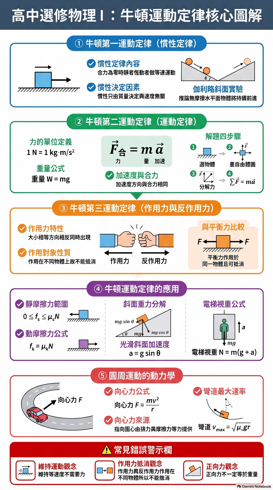

4-1
力與牛頓第一運動定律
- 慣性定律：合力為零時，靜者恆靜、動者恆沿直線做等速度運動；慣性只由質量決定
- 維持運動不需要力，改變運動才需要力；等速前進時推力等於摩擦力
4資訊圖表重點
點一下放大全圖
2互動視覺化：伽利略斜面與推木箱
1NotebookLM 簡報
3隨堂評量
4-2
牛頓第二運動定律
- F⃗合 = m a⃗：加速度與合力成正比、與質量成反比，方向與合力相同；1 N = 1 kg·m/s²
- 重量 W = mg（本章 g = 10 m/s²，1 kgw = 10 N）；解題四步驟：選物體 → 自由體圖 → 分解 → ΣF = ma
4資訊圖表重點
點一下放大全圖
2互動視覺化：F = ma 實驗台
由靜止開始拉。黃：拉力、紅：重力、綠：正向力、橘：摩擦力、青：加速度。37° 依課本取 sin 37° = 0.6、cos 37° = 0.8。
1NotebookLM 簡報
3隨堂評量
4-3
牛頓第三運動定律
- 作用力與反作用力：大小相等、方向相反、同時出現、性質相同，F⃗甲對乙 = −F⃗乙對甲
- 兩力作用在不同物體上，所以不能互相抵消；平衡的兩個力才作用在同一物體上
4資訊圖表重點
點一下放大全圖
2互動視覺化：互推實驗與並排木塊
1NotebookLM 簡報
3隨堂評量
4-4
牛頓運動定律的應用
- 靜摩擦力 0 ≤ fₛ ≤ μₛN（隨外力改變）；動摩擦力 fk = μkN；正向力不一定等於 mg
- 斜面：沿斜面 mg sin θ、垂直斜面 mg cos θ；連接體先整體後隔離；電梯視重 N = m(g + a)，看加速度方向
4資訊圖表重點
點一下放大全圖
2互動視覺化：摩擦力、斜面、連接體、電梯
1NotebookLM 簡報
3隨堂評量
4-5
圓周運動的動力學
- 等速圓周運動需要指向圓心的合力：F向心 = mv²/r = mrω²；向心力是合力的角色，不是另一種新的力
- 水平彎道靠靜摩擦力：vmax = √(μₛgr)；鉛直圓周最高點至少 vmin = √(gr)
4資訊圖表重點
點一下放大全圖
2互動視覺化：向心力從哪裡來
1NotebookLM 簡報
3隨堂評量
★
總複習
- 本章重點總整理、形成性評量 10 題（附答案）、完整資訊圖表與教學影片
1NotebookLM 簡報：總整理與形成性評量
▶NotebookLM 教學影片
4完整資訊圖表

點一下放大